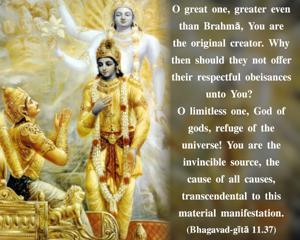
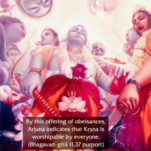

O great one, greater even than Brahmā, You are the original creator. Why then should they not offer their respectful obeisances unto You? O limitless one, God of gods, refuge of the universe! You are the invincible source, the cause of all causes, transcendental to this material manifestation.


By this offering of obeisances, Arjuna indicates that Kṛṣṇa is worshipable by everyone. He is all-pervading, and He is the Soul of every soul. Arjuna is addressing Kṛṣṇa as mahātmā, which means that He is most magnanimous and unlimited. Ananta indicates that there is nothing which is not covered by the influence and energy of the Supreme Lord, and deveśa means that He is the controller of all demigods and is above them all. He is the shelter of the whole universe. Arjuna also thought that it was fitting that all the perfect living entities and powerful demigods offer their respectful obeisances unto Him, because no one is greater than Him. Arjuna especially mentions that Kṛṣṇa is greater than Brahmā because Brahmā is created by Him. Brahmā is born out of the lotus stem grown from the navel abdomen of Garbhodaka-śāyī Viṣṇu, who is Kṛṣṇa’s plenary expansion; therefore Brahmā and Lord Śiva, who is born of Brahmā, and all other demigods must offer their respectful obeisances. It is stated in Śrīmad-Bhāgavatam that the Lord is respected by Lord Śiva and Brahmā and similar other demigods. The word akṣaram is very significant because this material creation is subject to destruction but the Lord is above this material creation. He is the cause of all causes, and being so, He is superior to all the conditioned souls within this material nature as well as the material cosmic manifestation itself. He is therefore the all-great Supreme.